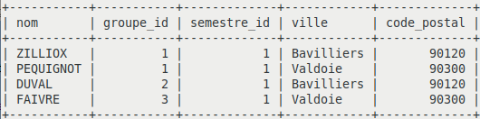

Objectif :
SELECT [nom_table.nom_champs, nom_table.nom_champs2.....]
FROM
nom_table1, nom_table2 ….
WHERE [conditions, jointure … ]
ORDER BY [nom_table.nom_champs] [DESC]
[LIMIT] ;● Par exemple :
SELECT * FROM catalogue WHERE ref="123abc"; (* : tous les champs)
SELECT Client.NomClient FROM Client WHERE Client.PrivilegeClient=true
ORDER by Client.NomClient;[conditions]SQL
= <= <>…AND OR NOT
(expressions)nom_champ BETWEEN 1 AND 30nom_champ LIKE '123%'nom_champ IS NULL Utilisation de date
“aaaa-mm-jj”ORDER BY ETU_Nom [ASC] « CROISSANT »ORDER BY ETU_Nom DESC « DECROISSANT »SELECT DISTINCT nom_champ …WHERE nom_champ IN ('valeur1', 'valeur2', ...)lors de l’écriture des chaînes de texte :
' (apostrophe ou single quote, TOUCHE Alt Gr + 4) sert
à entourer une valeur de format alphanumérique." (guillemet ou double quote, TOUCHE Alt Gr + 3) est
une alternative (propre à MySQL) ; elle est déconseillée, car seul
' est normalisé.Créer une table pour gérer des étudiants , avec comme nom de la table Etudiant et comme colonnes (champs) dans la table :
| Etudiant |
|---|
| idEtudiant nom adresse ville code_postal telephone date_naisssance sexe boursier groupe_id semestre_id note_ue1 note_ue2 |
idEtudiant : ce champ (attribut) est de type
entier , c’est une clé primaire avec un compteur (champ
qui utilise l’attribut «AUTO_INCREMENT»).nom : ce champ (attribut) est de type chaîne de
caractères variable de taille 20 caractères maximum.adresse : ce champ (attribut) est de type
chaîne de caractères variable de taille 40 caractères
maximum.ville : ce champ (attribut)est de type chaîne
de caractères variable de taille 20 caractères maximum.code_postal : ce champ (attribut) est de type
chaîne de caractères variable de taille 5 caractères
(un numérique ne convient pas, car on pert le 0 devant si il y en
a).telephone : ce champ (attribut) est de type
chaîne de caractères variable de taille 10 caractère
maximumdate_naissance: ce champ (attribut) est de
datesexe : ce champ (attribut) est de type chaîne
de caractères variable de taille 1 caractère maximum.boursier : ce champ (attribut) est de type
chaîne de caractères variable de taille 1 caractère
maximum.groupe_id : ce champ (attribut) est de type
entiersemestre_id : ce champ (attribut) est de type
entiernote_ue1 : ce champ (attribut) est de type
numeric qui affiche un numérique avec 2 chiffres après
la virgule, la valeur la plus grande est 99,99note_ue2 : ce champ (attribut) est de type
numeric qui affiche un numérique avec 2 chiffres après
la virgule, la valeur la plus grande est 99,99Utiliser le script ci-dessous pour insérer des enregistrements
-- version 2024
INSERT INTO Etudiant (idEtudiant, nom, adresse, ville, code_postal, telephone, date_naissance, sexe, boursier, groupe_id, semestre_id, note_ue1, note_ue2) VALUES
(1, 'BERNARD', '1 rue sous bois', 'Belfort', '90000', '0384545401', '2006-01-01', 'F', 'N', 1, 1, '11.50', '10.50'),
(19, 'CHAVEAUX', '5 rue du chasseur', 'Strasbourg', '68000', '0384545419', '2006-01-01', 'H', 'N', 2, 2, '10.50', '9.50'),
(20, 'PRETTOT', '8 rue vilapogo', 'Belfort', '90000', '0384545420', '2006-07-12', 'H', 'O', 2, 2, '12.50', '8.50'),
(7, 'RIOT', '67 rue pasteur', 'Montbeliard', '25200', '0384545407', '2006-06-06', 'H', 'N', 2, 1, '13.50', '12.50'),
(8, 'BOISSENIN', '1 rue sous bois', 'Belfort', '90000', '0384545408', '2006-08-09', 'H', 'O', 2, 1, '15.5', '16.50'),
(2, 'PEQUIGNOT', '2 rue de la liberation', 'Valdoie', '90300', '0384545402', '2005-06-06', 'H', 'O', 1, 1, '17.50', '9.50'),
(3, 'ZILLIOX', '7 rue du verger', 'Bavilliers', '90120', '0384545403', '2005-01-01', 'H', 'N', 1, 1, '11.50','9.25'),
(4, 'MONNIER', '3 rue du boulanger', 'TAILLECOURT', '25400', '0384545404', '2005-02-06', 'H', 'O', 1, 1, '9.50', '15.5'),
(5, 'BRISCHOUX', '5 rue du chasseur', 'Belfort', '90000', '0384545405', '2005-05-25', 'H', 'N', 2, 1, '10', '9.50'),
(6, 'DUVAL', '8 rue vilapogo', 'Bavilliers', '90120', '0384545406', '2005-03-11', 'H', 'O', 2, 1, '13.50', '8.50'),
(10, 'FAIVRE', '7 rue des vergers de rioz', 'Valdoie', '90300', '0384545410', '2005-01-05', 'H', 'O', 3, 1, '8.50', '12.50'),
(17, 'DELANOE', '7 rue du verger', 'Valdoie', '90300', '0384545417', '2005-01-01', 'H', 'N', 1, 2, '12.50', '14.50'),
(18, 'BONVALOT', '3 rue du boulanger', 'Belfort', '90000', '0384545418', '2005-01-01', 'H', 'O', 1, 2, '10', '11.50'),
(21, 'COULON', '67 rue pasteur', 'Valdoie', '90300', '0384545421', '2005-01-01', 'H', 'N', 2, 2, '17', '6.5'),
(23, 'KENDE', '2 rue de la liberation', 'Bavilliers', '90120', '0384545423', '2005-05-31', 'H', 'N', 3, 2, '15', '7.5'),
(24, 'KLEIN', '7 rue du verger', 'Montbeliard', '25200', '0384545424', '2005-01-01', 'H', 'N', 3, 2, '13', '15'),
(25, 'VALZER', '3 rue du boulanger', 'Valdoie', '90300', '0384545425', '2005-01-06', 'H', 'O', 3, 2, '11', '10'),
(26, 'PY', '5 rue du chasseur', NULL, '90000', '0384545426', '2005-01-10', 'F', 'N', 3, 2, '12.20', '7.90'),
(27, 'VERNET', '8 rue vilapogo', NULL, '90120', '0384545427', '2005-02-02', 'H', 'O', 4, 3, '10.30', '11.85'),
(28, 'BAILLIT', '67 rue pasteur', NULL, '25200', '0384545428', '2005-01-01', 'H', 'N', 4, 3, '7.90', '15.90'),
(16, 'LUZET', '2 rue de la liberation', 'Belfort', '90000', '0384545416', '2004-01-01', 'H', 'O', 1, 2, '10.25', '9.25'),
(22, 'VALOT', '1 rue sous bois', '', '90000', '0384545422', '2004-12-12', 'H', 'O', 2, 2, '10', '9.20'),
(29, 'DUPONT', '8 rue vilapogo', '', '90300', '0384545429', '2004-06-06', 'H', 'O', 4, 3, '13.20', '15.50'),
(11, 'FAIVRE', '3 rue des vergers', 'Cernay', '68000', '0384545411', '2004-01-01', 'F', 'N', 3, 1, '5.6', '12.05'),
(12, 'DUCHENNE', '5 rue du chasseur', 'Belfort', '90000', '0384545412', '2004-01-01', 'F', 'O', 3, 1, '10.4', '11.3'),
(13, 'BOULANGER', '8 rue vilapogo', 'Belfort', '90000', '0384545413', '2004-01-01', 'F', 'N', 1, 2, '13', '9.20'),
(9, 'FONTAINE-LEGIOT', '2 rue des vergers', 'Mulhouse', '68000', '0384545409', '2003-01-01', 'H', 'N', 3, 1, '11.25', '12'),
(14, 'MOREAU', '67 rue pasteur', 'Belfort', '90000', '0384545414', '2003-06-01', 'H', 'O', 1, 2, '9', '12.50'),
(15, 'RIGOULOT', '1 rue sous bois', 'Valdoie', '90300', '0384545415', '2003-12-12', 'H', 'N', 1, 2, '15', '10.50');
Tester la requête suivante :
+-----------+------------------------+-------------+
| nom | adresse | semestre_id |
+-----------+------------------------+-------------+
| BERNARD | 1 rue sous bois | 1 |
| BOULANGER | 8 rue vilapogo | 2 |
| MOREAU | 67 rue pasteur | 2 |
| LUZET | 2 rue de la liberation | 2 |
| BONVALOT | 3 rue du boulanger | 2 |
+-----------+------------------------+-------------+Sur le même principe :
Écrire une requête pour sélectionner le nom, le groupe et le champ ‘boursier’ (si ils sont boursiers ou non) des étudiants du groupe 1, du semestre 1 quand ils sont boursiers.
Résultat :
+-----------+-----------+----------+
| nom | groupe_id | boursier |
+-----------+-----------+----------+
| PEQUIGNOT | 1 | O |
| MONNIER | 1 | O |
+-----------+-----------+----------+Tester la requête suivante : Afficher tous les étudiants triés par semestre, puis par groupe, puis par nom dans l’ordre décroissant. Utiliser l’instruction ORDER BY champ1, champ2, champ3 ; remplacer « champ » par le nom du champ suivi de ASC ou DESC (par défaut le tri est fait de façon ascendante)
Utiliser l’instruction ORDER BY « champ1 » après l’instruction WHERE
« conditions ». Aidez vous des informations sur : https://www.w3schools.com/SQL/sql_orderby.asp
Tester la requête suivante :
Sur le même principe :
Écrire une requête pour sélectionner uniquement les étudiants (nom, groupe, ville, semestre ) du groupe 1 et du semestre 1 ou du semestre 2 et de la ville de « Belfort ». Ordonner la liste résultat par semestre croissant puis par groupe croissant puis par nom de ville croissante (par ordre alphabétique) puis par nom d’étudiant décroissant.
Résultat :
+-----------+-----------+-------------+-------------+
| nom | groupe_id | ville | semestre_id |
+-----------+-----------+-------------+-------------+
| ZILLIOX | 1 | Bavilliers | 1 |
| BERNARD | 1 | Belfort | 1 |
| MONNIER | 1 | TAILLECOURT | 1 |
| PEQUIGNOT | 1 | Valdoie | 1 |
| MOREAU | 1 | Belfort | 2 |
| LUZET | 1 | Belfort | 2 |
| BOULANGER | 1 | Belfort | 2 |
| BONVALOT | 1 | Belfort | 2 |
| PRETTOT | 2 | Belfort | 2 |
+-----------+-----------+-------------+-------------+Symboles de comparaison et opérateurs logiques
| norme ISO | MySQL | Oracle | PostgreSQL | SQLserver | |
|---|---|---|---|---|---|
| != | <> | <> != | <> != | <> != | <> != |
| && | AND | AND && | AND | AND | AND |
| || | OR | OR || | OR | OR | OR |
| ! | NOT | NOT ! | NOT | NOT | NOT |
Dans la requête ci-dessous, simplifier l’expression dans le WHERE:

Écrire une requête pour sélectionner uniquement les étudiants (nom, groupe, ville, semestre, boursier ) qui sont boursiers ou qui habitent la ville de belfort et qui sont tous du semestre 2 (trier les enregistrements par groupe puis ville puis nom de façon ascendante).
+-----------+-----------+---------+-------------+----------+
| nom | groupe_id | ville | semestre_id | boursier |
+-----------+-----------+---------+-------------+----------+
| BONVALOT | 1 | Belfort | 2 | O |
| BOULANGER | 1 | Belfort | 2 | N |
| LUZET | 1 | Belfort | 2 | O |
| MOREAU | 1 | Belfort | 2 | O |
| VALOT | 2 | | 2 | O |
| PRETTOT | 2 | Belfort | 2 | O |
| VALZER | 3 | Valdoie | 2 | O |
+-----------+-----------+---------+-------------+----------+Tester la requête suivante avec et sans le mot clé
distinct :
Écrire la requête pour afficher les villes distinctes de tous les
étudiants dont le code postal commence par 90 et dont le nom de ville
n’est pas NULL et n’est pas une chaîne vide. Utiliser le mot clé
DISTINCT.
Aidez vous des informations sur : https://www.w3schools.com/sql/sql_distinct.asp
Résultat :
+------------+
| ville |
+------------+
| Belfort |
| Valdoie |
| Bavilliers |
+------------+Écrire une requête pour sélectionner les étudiants et les villes dont
la ville appartient à cette liste (‘strasbourg’,‘mulhouse’,‘cernay’).
Utiliser l’instruction IN
Aidez vous des informations sur : https://www.w3schools.com/SQL/sql_in.asp
Résultat :
+-----------------+------------+
| nom | ville |
+-----------------+------------+
| FONTAINE-LEGIOT | Mulhouse |
| FAIVRE | Cernay |
| CHAVEAUX | Strasbourg |
+-----------------+------------+Écrire la requête pour sélectionner le nom des étudiants dont le
champ de la ville est vide (Utiliser l’instruction IS NULL)
et dont le sexe est « H ».
Il faut utiliser IS NULL ou IS NOT NULL car
c’est une logique 3 états (VRAI, FAUX, non renseigné (NULL))
+---------+-------+
| nom | ville |
+---------+-------+
| VERNET | NULL |
| BAILLIT | NULL |
+---------+-------+Faire la même requête mais en rajoutant les étudiants dont le champ de la ville est une chaîne de caractères vide
+---------+-------+
| nom | ville |
+---------+-------+
| VALOT | |
| VERNET | NULL |
| BAILLIT | NULL |
| DUPONT | |
+---------+-------+Requête pour afficher le Nom des étudiants et leur ville. Le nom des étudiants commence par « B » ou « D » et ils habitent une ville qui possède la lettre « o » (triés par nom).
Aidez vous des informations sur : https://www.w3schools.com/sql/sql_like.asp
Résultat :
+-----------+---------+
| nom | ville |
+-----------+---------+
| BERNARD | Belfort |
| BOISSENIN | Belfort |
| BONVALOT | Belfort |
| BOULANGER | Belfort |
| BRISCHOUX | Belfort |
| DELANOE | Valdoie |
| DUCHENNE | Belfort |
+-----------+---------+Écrire une requête pour afficher le nom la ville et l’adresse des étudiants dont l’adresse est composée du mot « verger » et dont la ville est composée des lettres « er » ou des lettres « a » suivies de « l ».
+---------+------------+----------------------------+
| nom | ville | adresse |
+---------+------------+----------------------------+
| DELANOE | Valdoie | 7 rue du verger |
| FAIVRE | Cernay | 3 rue des vergers |
| FAIVRE | Valdoie | 7 rue des vergers de rioz |
| ZILLIOX | Bavilliers | 7 rue du verger |
+---------+------------+----------------------------+now(),
day(), month(), year())Écrire une requête pour afficher le nom et la date de naissance des
étudiants dont la date de naissance est comprise entre le
"2004-1-1" And "2004-12-31", qui sont des
hommes et qui habitent Belfort ou Montbéliard (utiliser le code postal
90000 (Belfort) et 25200(Montbéliard)). Proposer une deuxième solution
avec comme condition (dans le « WHERE ») : l’année est égale à
"2004". (trier l’affichage par date de naissance)
+-------+----------------+
| nom | date_naissance |
+-------+----------------+
| LUZET | 2004-01-01 |
| VALOT | 2004-12-12 |
+-------+----------------+
* selon les mises à jour, votre résultat peut être différentPour les plus rapides
La requête ci-dessous retourne les 10 enregistrements de la position 6 à 15
SELECT nom
FROM Etudiant
ORDER BY nom
LIMIT 5,10 ;(https://dev.mysql.com/doc/refman/5.7/en/select.html)
Tester et utiliser la lien ci-dessous pour https://www.w3schools.com/SQL/sql_top.asp
Dans une page Web, on désire sélectionner les 6 premiers étudiants
triés par Groupe (descendant : plus grand au plus petit) puis par Nom
(pour ordre alphabétique). Écrire la requête, utiliser l’instruction
LIMIT pour limiter le nombre d’enregistrements
sélectionnés.
+----------+-----------+
| nom | groupe_id |
+----------+-----------+
| BAILLIT | 4 |
| DUPONT | 4 |
| VERNET | 4 |
| DUCHENNE | 3 |
| FAIVRE | 3 |
| FAIVRE | 3 |
+----------+-----------+sélectionner les 4 suivants
+-----------------+-----------+
| nom | groupe_id |
+-----------------+-----------+
| FONTAINE-LEGIOT | 3 |
| KENDE | 3 |
| KLEIN | 3 |
| PY | 3 |
+-----------------+-----------+ Le mot clé LIMIT n’est pas standard
Aidez vous des informations la documentation en annexe (suivre le
lien) pour les expressions régulières ou sur : https://dev.mysql.com/doc/refman/5.7/en/regexp.html
et https://www.w3schools.com/SQL/sql_like.asp Avec la
documentation ci dessus (cas de LIKE puis de REGEXP):
Remarque : LIKE est plus rapide que REGEXP, voir article http://billauer.co.il/blog/2020/12/mysql-index-pattern-matching-performance/
+---------+-------------+
| nom | code_postal |
+---------+-------------+
| BAILLIT | 25200 |
+---------+-------------+Pour comprendre les expressions régulières, voici 1 site web intéressant : regex101
Écrire une requête pour sélectionner les étudiants qui ont plus de 20
ans après le 30 septembre de la fin de l’année universitaire (mois de
naissance inférieur à 10 si c’est l’année de leur 20 ans). Ces étudiants
devaient payer une sécurité sociale si ils n’étaient pas boursiers .
Ordonner les étudiants du plus jeune au plus vieux.
commencer par tester :
SELECT day(now());
SELECT month(now());
SELECT year(now());idée : plus de 20 ans entre aujourd’hui et leur date de naissance ou 20 ans et …..
+-----------------+----------------+
| nom | date_naissance |
+-----------------+----------------+
| FAIVRE | 2004-01-01 |
| BOULANGER | 2004-01-01 |
| RIGOULOT | 2003-12-12 |
| FONTAINE-LEGIOT | 2003-01-01 |
+-----------------+----------------+
* selon les mises à jour, votre résultat peut être différentSi les dates ne sont pas correctes, utiliser l’instruction SQL
suivante pour les mettre à jour
UPDATE Etudiant SET date_naissance=DATE_ADD(date_naissance,INTERVAL 1 YEAR);